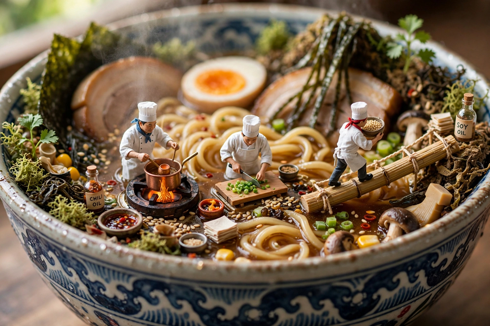

Diorama Ẩm Thực Tinh Tế
Diorama 4 món ăn 4 nền văn hóa dạng lưới 2x2.

Xem trước
2x2 grid, do this for 4 famous cuisines: function dish(AA){
<instruction>
Input A is a Famous Dish / Culinary Tradition / Signature Dessert / Regional Specialty.
Analyze:
- ingredient hierarchy, cooking method, plating logic
- origin region, histori…
Prompt VIP
Phần còn lại dành cho thành viên VIP. Mở khoá toàn bộ kho Master Prompt để copy bản đầy đủ.
Prompt cùng thể loại
- Dumpling City
Thành phố bánh bao tí hon sống động với dòng sông sa tế.
- Luxury Menu Video
Menu nhà hàng cao cấp biến thành món ăn 3D Hologram & đồ …
- Miniature Food Video
Nấu ăn tí hon 10 giây trong căn bếp pha lê sang trọng.
- Búp Bê Len Nấu Ăn
Búp bê len móc thủ công nấu ăn trong căn bếp bằng len ấm …